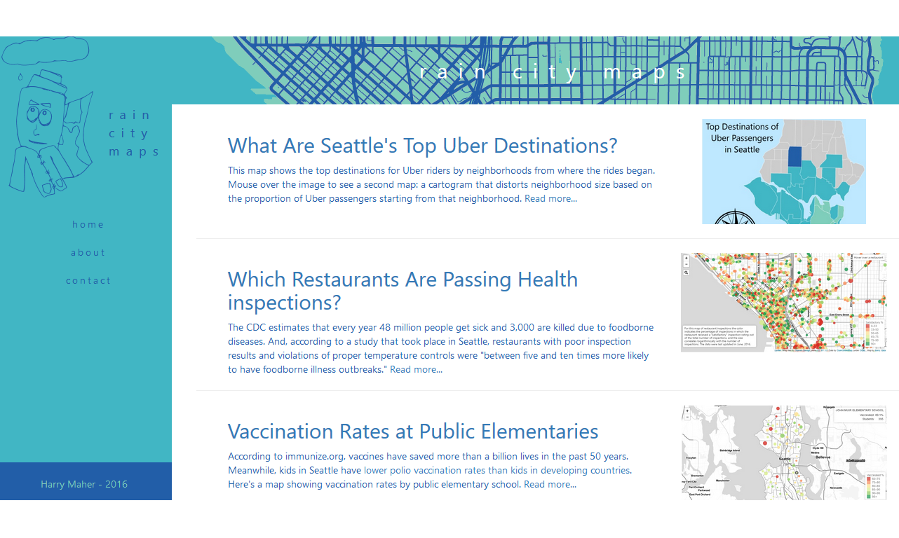

Below are some examples of my work: click on the pictures to open the projects in a new tab
I put together the above tool to allow people to map out the residuals of simple bivariate regression models using D3, regression-js, and Leaflet. The map shows where there is a high deviation between the expected and observed values for the Y values on the chart. (Using King County election data).
Here is an interactive musical chart of finishing time data that I scraped from a race that I ran in (using Beautiful Soup). The chart was made by combining D3 and Tone.js, and the ultimate goal is to create a band called "The Why Not Axis" that plays pop music covers using relevant charts as instruments. Click on these charts to play some tones!

When I first moved to Seattle in 2016, I made a handful of maps to help me better understand the city. Many of these maps are publicly viewable at https://raincitymaps.github.io/. Topics range from Seattle school immunization rates to election results.
At Big Water Consulting, I developed a customizable participatory mapping web application to help community members describe their spatial experiences. This GIS project utilized a creative combination of Leaflet, Google Forms, and OSM.
Here is an assortment of less serious programs that I created either alone or with teams for the Seattle Stupid Hackathon, a group I help organize. (Pictured: Kondofy It! the bookmarklet that helps you get rid of things that don't spark joy online.)
This is a set of interactive maps intended to allow users to explore how lifestyles influence (or don't influence) health outcomes at the Brazilian state level. It formed a part of the above semester-long Applied GIS project.
 For data collection projects at Big Water, I develop custom, interactive dashboards that pull in live data using R's Shiny library. This helps stakeholders and managers track a project's progress.
For data collection projects at Big Water, I develop custom, interactive dashboards that pull in live data using R's Shiny library. This helps stakeholders and managers track a project's progress.
This is an example of original research that I performed as an undergraduate. We wanted to see if we could reduce junk food consumption with social norms. In this experiment, my lab partner and I either gave participants a fabricated "low-norm" condition or no such condition and observed the effect on junk food consumption.
Here is an interactive data visualization about hourly wages (by race and gender) that I helped update when I worked at the Data Analysis and Social Inquiry Lab (DASIL) along with other similar visualizations viewable at https://dasil.sites.grinnell.edu/.